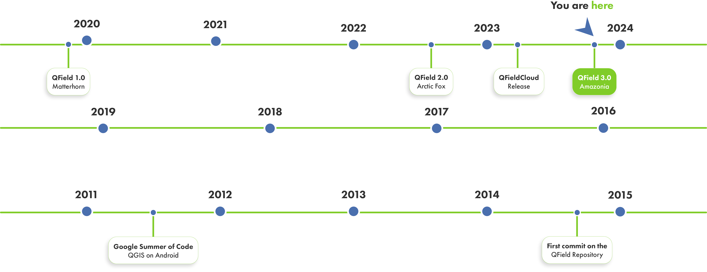
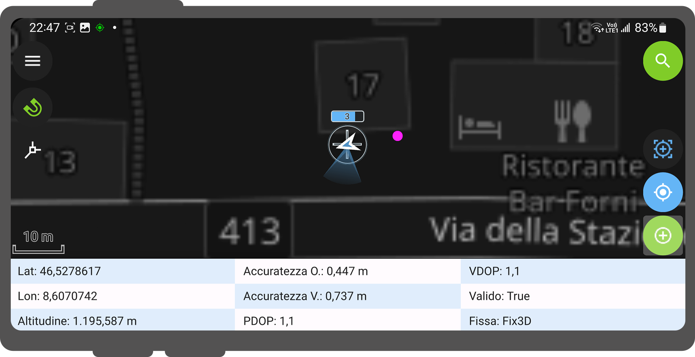
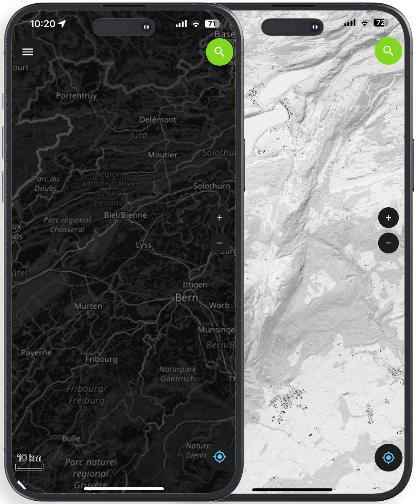

<!-- .slide: data-background="./assets/QField_App-Medienmitteilung_AppAward2022.png" --> --- <link rel="stylesheet" href="./stylesheets/main-style.css"> <style> .reveal .slides::after { content: ""; position: fixed; bottom: 0px; right: 0px; background-image: url('assets/logo-bg-cut-l.png'); background-size: 200px; background-repeat: no-repeat; opacity: 0.2; width: 140px; height: 140px; pointer-events: none; z-index: 1; } </style> <div style="margin-top: 20px;"> <!-- .slide: class="stack" --> # OPEN SOURCE<br><span class="green-title">GEONINJAS</span><br>MADE IN<br>SWITZERLAND ### we l[i|o]ve open source. <img src="assets/logo_opengisch_open-source-geoninjas.png" class="styled-logo"> </div> --- <div style="margin-top: 20px;"> <!-- .slide: class="stack" --> # TABLE OF<br><span class="green-title">CONTENT</span> <ul class="custom-bullet-list"> <li><img src="assets/arrow_.png" alt="bullet" class="custom-bullet"> Why QField?</li> <li><img src="assets/arrow_.png" alt="bullet" class="custom-bullet"> What is QField?</li> <li><img src="assets/arrow_.png" alt="bullet" class="custom-bullet"> Supported platforms</li> <li><img src="assets/arrow_.png" alt="bullet" class="custom-bullet"> History</li> <li><img src="assets/arrow_.png" alt="bullet" class="custom-bullet"> GPS, tracking and navigation</li> <li><img src="assets/arrow_.png" alt="bullet" class="custom-bullet"> Other features</li> <li><img src="assets/arrow_.png" alt="bullet" class="custom-bullet"> QField 3.0</li> <li><img src="assets/arrow_.png" alt="bullet" class="custom-bullet"> QFieldCloud</li> </ul> </div> --- <div style="margin-top: 20px;"> <!-- .slide: class="stack" --> # WHY<br><span class="green-title">QFIELD?</span> ### because data is outside the office. </div> --- <div style="margin-top: 20px;"> <!-- .slide: class="stack" --> # WHAT IS<br><span class="green-title">QFIELD?</span> </div> --v-- <div style="margin-top: 20px;"> <!-- .slide: class="stack" --> ## WHAT IS <span class="green-title">QFIELD?</span> The mobile data collection app for <span class="green-title">QGIS</span> <img src="assets/qfield_device_landscape.png" alt="landscape" style="width: 80%"/> </div> --v-- <div style="margin-top: 20px;"> <!-- .slide: class="stack" --> ## WHAT IS <span class="green-title">QFIELD?</span> Minimalist <span class="green-title">U</span>ser <span class="green-title">I</span>nterface <img src="assets/mockup_minimalistUI.png" alt="UI" style="width: 80%"/> </div> --v-- <div style="margin-top: 20px;"> <!-- .slide: class="stack" --> ## WHAT IS <span class="green-title">QFIELD?</span> Beautiful cartography <img src="assets/mockup_beautifulcartography.png" alt="cartography" style="width: 80%"/> </div> --v-- <div style="margin-top: 20px;"> <!-- .slide: class="stack" --> ## WHAT IS <span class="green-title">QFIELD?</span> Powerful tools <img src="assets/mockup_powerfultools.png" alt="powerful-tools" style="width: 80%"/> </div> --v-- <div style="margin-top: 20px;"> <!-- .slide: class="stack" --> ## WHAT IS <span class="green-title">QFIELD?</span> Efficient interaction <img src="assets/mockup_efficientinteraction.png" alt="efficient-interaction" style="width: 80%"/> </div> --v-- <div style="margin-top: 20px;"> <!-- .slide: class="stack" --> ## WHAT IS <span class="green-title">QFIELD?</span> Beneficial integrations <img src="assets/mockup_beneficialintegrations.png" alt="beneficial-integrations" style="width: 80%"/> </div> --v-- <div style="margin-top: 20px;"> <!-- .slide: class="stack" --> ## WHAT IS <span class="green-title">QFIELD?</span> Professional hardware <img src="assets/phone_tablet_prof_hardware.png" alt="professional-hardware" style="width: 80%"/> </div> --- <div style="margin-top: 20px;"> <!-- .slide: class="stack" --> # SUPPORTED<br><span class="green-title">PLATFORMS</span> <img src="assets/supportedplatforms_slide.png" alt="supported-platforms" style="width: 90%;"/> </div> --- <div style="margin-top: 20px;"> <!-- .slide: class="stack" --> # OUR<br><span class="green-title">HISTORY</span>  </div> --v-- <div style="margin-top: 20px;"> <!-- .slide: class="stack" --> # OUR<br><span class="green-title">HISTORY</span> </div> --- <div style="margin-top: 20px;"> <!-- .slide: class="stack" --> # GPS, TRACKING<br><span class="green-title">AND NAVIGATION</span> </div> --v-- <div style="margin-top: 20px;"> <!-- .slide: class="stack" --> ## GPS, TRACKING <span class="green-title">AND NAVIGATION</span> High Precision GNSS Integration <ul class="custom-bullet-list"> <li><img src="assets/arrow_.png" alt="bullet" class="custom-bullet"> Bluetooth</li> <li><img src="assets/arrow_.png" alt="bullet" class="custom-bullet"> UDP</li> <li><img src="assets/arrow_.png" alt="bullet" class="custom-bullet"> TCP</li> <li><img src="assets/arrow_.png" alt="bullet" class="custom-bullet"> Serial port (USB)</li> <li><img src="assets/arrow_.png" alt="bullet" class="custom-bullet"> Internal</li> </ul> </div> --v-- <div style="margin-top: 20px;"> <!-- .slide: class="stack" --> ## GPS, TRACKING <span class="green-title">AND NAVIGATION</span> Subcentimeter positioning </div> --v-- <div style="margin-top: 20px;"> <!-- .slide: class="stack" --> ## GPS, TRACKING <span class="green-title">AND NAVIGATION</span> Position averaging  </div> --v-- <div style="margin-top: 20px;"> <!-- .slide: class="stack" --> ## GPS, TRACKING <span class="green-title">AND NAVIGATION</span> IMU Professional game changer <img src="assets/IMU.png" alt="IMU" class="styled-image" style="width: 50%;"/> </div> --v-- <div style="margin-top: 20px;"> <!-- .slide: class="stack" --> ## GPS, TRACKING <span class="green-title">AND NAVIGATION</span> Tracking <video alt="tracking" class="styled-video" controls="controls;"> <source src="assets/tracking.mp4" type="video/mp4"/> </video> </div> --v-- <div style="margin-top: 20px;"> <!-- .slide: class="stack" --> ## GPS, TRACKING <span class="green-title">AND NAVIGATION</span> Set feature as destination <img src="assets/navigate-to.gif" class="styled-video" alt="feature-destination" style="width=20%;"> </div> --v-- <div style="margin-top: 20px;"> <!-- .slide: class="stack" --> ## GPS, TRACKING <span class="green-title">AND NAVIGATION</span> Stakeout with precise view <img src="assets/precise-view.png" alt="precise-view" class="styled-image" width="50%"> </div> --- <div style="margin-top: 20px;"> <!-- .slide: class="stack" --> # EXTERNAL<br><span class="green-title">SENSORS</span> </div> --v-- <div style="margin-top: 20px;"> <!-- .slide: class="stack" --> ## EXTERNAL <span class="green-title">SENSORS</span> Example geiger sensor <video controls="controls" class="styled-video"> <source src="assets/sensors.mp4" type="video/mp4" width="30%"/> </video> </div> --v-- <div style="margin-top: 20px;"> <!-- .slide: class="stack" --> ## EXTERNAL <span class="green-title">SENSORS</span> QR Code and NFC Reader <img src="assets/qr-code.png" alt="qr-code" class="styled-image" width="60%"> </div> --- <div style="margin-top: 20px;"> <!-- .slide: class="stack" --> # OTHER<br><span class="green-title">FEATURES</span> </div> --v-- <div style="margin-top: 20px;"> <!-- .slide: class="stack" --> ## OTHER <span class="green-title">FEATURES</span> Atlas printing <video controls="controls" class="styled-video"> <source src="assets/print.mp4" type="video/mp4"/> </video> </v> --v-- <div style="margin-top: 20px;"> <!-- .slide: class="stack" --> ## OTHER <span class="green-title">FEATURES</span> Opening individual datasets <video controls="controls" class="styled-video"> <source src="assets/opening_individual_geopdf.mp4" type="video/mp4"/> </video> </div> --v-- <div style="margin-top: 20px;"> <!-- .slide: class="stack" --> ## OTHER <span class="green-title">FEATURES</span> Height profile <video controls="controls" class="styled-video"> <source src="assets/profile.webm" type="video/mp4" width="10%"/> </video> </div> --v-- <div style="margin-top: 20px;"> <!-- .slide: class="stack" --> ## OTHER <span class="green-title">FEATURES</span> Searching for attributes and coordinates <video controls="controls" class="styled-video"> <source src="assets/search.mp4" type="video/mp4"/> </video> </div> --v-- <div style="margin-top: 20px;"> <!-- .slide: class="stack" --> ## OTHER <span class="green-title">FEATURES</span> Measurement tool <video controls="controls" class="styled-video"> <source src="assets/measuring.mp4" type="video/mp4"/> </video> </div> --v-- <div style="margin-top: 20px;"> <!-- .slide: class="stack" --> ## OTHER <span class="green-title">FEATURES</span> Dark mode  </div> --v-- <div style="margin-top: 20px;"> <!-- .slide: class="stack" --> ## OTHER <span class="green-title">FEATURES</span> And much more... <ul class="custom-bullet-list"> <li><img src="assets/arrow_.png" alt="bullet" class="custom-bullet"> Geometry editing and drawing</li> <li><img src="assets/arrow_.png" alt="bullet" class="custom-bullet"> Dashboard widgets (QML/HTML)</li> <li><img src="assets/arrow_.png" alt="bullet" class="custom-bullet"> Time filter</li> <li><img src="assets/arrow_.png" alt="bullet" class="custom-bullet"> Rotation</li> </ul> </div> --v-- <div style="margin-top: 20px;"> <!-- .slide: class="stack" --> ## OTHER <span class="green-title">FEATURES</span> Dashboard widgets (QML/HTML) <video controls="controls" class="styled-video"> <source src="assets/qml_html.webm" type="video/mp4"/> </video> </div> --v-- <div style="margin-top: 20px;"> <!-- .slide: class="stack" --> ## OTHER <span class="green-title">FEATURES</span> Time filter <img src="assets/temporal-controller.gif" alt="temporal-controller" class="styled-image" width="35%"> </div> --v-- <div style="margin-top: 20px;"> <!-- .slide: class="stack" --> ## OTHER <span class="green-title">FEATURES</span> Rotation <video loop autoplay controls="controls" class="styled-video" width="25%"> <source src="assets/rotation.mp4" type="video/mp4"/> </video> </div> --- <div style="margin-top: 20px;"> <!-- .slide: class="stack" --> <!-- .slide: data-background="assets/cloud_2.svg" data-background-opacity="0.1" --> # QFIELD<span class="blue-title">CLOUD</span> ### Seamless fieldwork.<br> Seamless synchronization. <img src="assets/qfieldcloud-logo.png" alt="qfield-logo" class="styled-cloud-logo"> <div class="qf-background"> <img src="assets/cloud_2.svg" alt="cloud-background" > </div> </div> --v-- <div style="margin-top: 20px;"> <!-- .slide: class="stack" --> ## QFIELD<span class="blue-title">CLOUD</span> <img src="assets/qfieldcloud_pres.png" alt="qfield-cloud" style="width: 70%; margin-top: 80px;"> </div> --- <div style="margin-top: 20px;"> <!-- .slide: class="stack" --> # QFIELD<span class="blue-title"> 3.0</span> <video controls="controls" class="styled-video"> <source src="assets/300001-1900.mkv" type="video/webm"/> </video> </div> --- <div style="margin-top: 20px;"> <!-- .slide: class="stack" --> # BE PART OF YOUR<br><span class="green-title"> OWN APP</span> </div> --- <div style="margin-top: 20px;"> <!-- .slide: class="stack" --> # THANKS!<br><span class="green-title">QUESTIONS?</span> <ul class="custom-bullet-list"> <li><img src="assets/arrow_.png" alt="bullet" class="custom-bullet"> qfield.org | <span class="blue-title">qfield.cloud</span></li> <li><img src="assets/arrow_.png" alt="bullet" class="custom-bullet"> <b> @opengisch</li> <li><img src="assets/arrow_.png" alt="bullet" class="custom-bullet"> info@opengis.ch</li> </ul> </div>